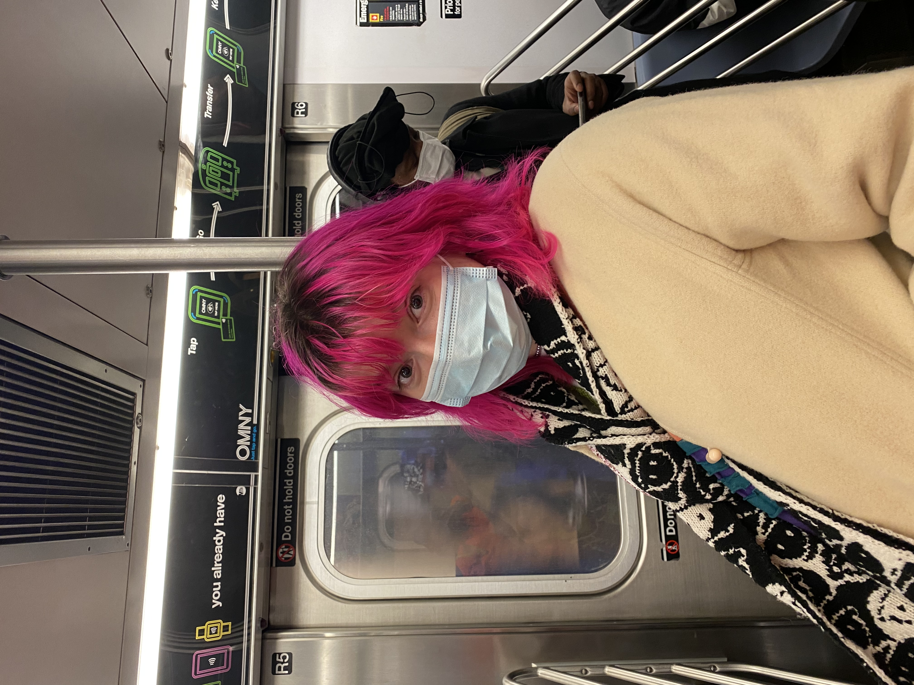

I am a student at NYU and am currently obtaining my BS in Integrated Design and Media. I have been a visual artist ever since I can remember, and I am classically trained in painting and drawing. Throughout high school, I experimented with various media, both traditional and digital, and today my art is oftentimes a hybrid of analog and digital media or some other form of mixed media work. In terms of subject matter, I have portrayed anything from mystical creatures to portraiture, and I am always looking for inspiration in the streets of the city and in my day-to-day life. I love to use bright colors and a maximalist style, so this unconventional portfolio is meant to be a showcase of my personality.